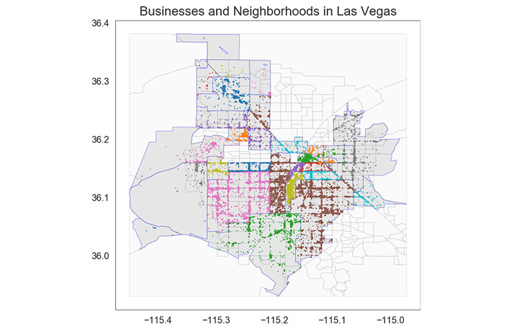

Studied the different parallelization mechanisms for matrix multiplication in MapReduce, including Horizontal-Vertical Partitioning and Vertical-Horizontal Partitioning for both dense and sparse input.
Business-Neighborhood Interaction on Yelp and Census Data

A data mining project for understanding how businesses and neighborhoods interact. Employed different clustering techniques to investigate the relationship between business dynamics and neighborhood characteristics. The former was revealed by clustering patronage patterns in Yelp data, the latter was shown by clustering neighborhoods by census data.
Developed a classifier with TensorFlow that could assign the class label based on deep features of the video using a subset of the Google's large-scale YouTube-8M dataset. Compared the model and accuracy performance of different machine learning algorithms (LR, SVM, ANN).
Designed and built a robot interactive program to recognize the temperature and color of the target object for NAO Robot. Techniques such as voice recognition, motion interaction and image processing were involved.
Developed a three-stage hybrid image retrieval framework based on deep convolutional neural networks, which is effective and efficient in dealing with image retrieval problem of the same style product. Alibaba large-scale image dataset ALISC-5M is used in this project, which contains five million product images categorized into 10 high-level concepts and 676 sub concepts.
Designed and implemented four interesting ball games in Processing interacted with Arduino. A self-made sphere game controller with accelerometer was introduced as a new human computer interaction for gaming.
MEBO Visualized Microenvironment Monitoring System can real-time monitor the environment condition with eight benchmarks around the device. Sensors for environment, data visualization, interactive design and android app are involved in the system.